Informe toi
Informe toi

Semaine de la durabilité
La Semaine de la Durabilité est le plus grand projet de durabilité étudiant.e en Suisse. Elle a
lieu chaque semestre de printemps sur le campus UNIL/EPFL. Elle a pour but de
sensibiliser les étudiant·e·x·s aux questions de durabilité et d’écologie.

CSAW (Climate & Sustainability Action Week)
La CSAW est une école d’été sur une semaine (non-créditée) co-créée par des étudiant·es et des
collaborateur·rices de l’UNIL et de l’EPFL et ouverte aux étudiant·es Bachelor, Master et PhD de
l’UNIL et de l’EPFL. La CSAW vise à donner des moyens d’agir aux étudiant·es à devenir des
acteur·ices du changement en leur transmettant des pratiques et outils de connaissance de soi,
de collaboration et de changements systémiques.

le canard huppé
Produit par des amateurices de journalisme, le journal permet, à toute personne qui le souhaite
de s’essayer à la rédaction d’article, à la création de vidéos, à l’enregistrement de podcasts
et tout autre medium. Les sujets de publication portent principalement sur les thématiques
environnementales au sens large (politique, économique, technique, sociétal, psychologique,
spirituelle, etc).

Coaching in sustainability
Une équipe de coachs à disposition pour soutenir les étudiant·es dans l'acquisition des
compétences et réseaux nécessaires à travailler au service de la durabilité durant leurs études
ou une fois diplômé·es.

EPFL Courses
L'EPFL propose plus de 150 cours liés à la durabilité, au niveau Bachelor et Master

Fresque du climat
Les fresques sont des ateliers de 3h, ludiques, collaboratifs et créatifs pour sensibiliser aux
enjeux environnementaux, basés sur l’intelligence collective et extrêmement pédagogiques. Les
ateliers proposés sont la Fresque du Climat, de la Biodiversité et du Numérique
 Profite
des services
Profite
des services

Slow ta carrière
Les ateliers d’orientation professionnelle « SLOW TA CARRIERE » offrent un espace réflexif et
d’élaboration d’éco-projets aux personnes désireuses de « verdir » leur vie professionnelle, en
proposant une démarche où les limites écologiques et la responsabilité sociale sont considérées
comme des critères de choix d’orientation, au même titre que les intérêts professionnels ou la
personnalité des participant.e.s .

association débouchés durables
Débouchés Durables est un pôle d’Unipoly qui cherche à rendre visible les questions concernant
la durabilité dans les futures expériences (professionnelles, associatives…) des étudiant.e.s.
Cela passe par la proposition d’articles sur la notion de « débouchés durables », des
conférences/événements afin de nourrir la réflexion, une base de données d’entreprises
sélectionnées conformément à une charte de valeurs, une permanence à l’écoute des
questionnements des étudiant.e.s…

Thrift store UPFashionLab
UpFashionLab est la première association étudiante à Lausanne dévouée à la sensibilisation
autour de l’industrie de la mode. Le but est de promouvoir une mode de partage, de récupération
et de durabilité sur campus.

Bibliothèque d’objets
Certains de vos objets prennent de la place ? Vous ne les utilisez plus ? Ils sont en bon état ?
Vous souhaitez gagner un peu d'espace ? La bibliothèque est là ! Vos objets auront l'opportunité
d'être utilisés et feront la joie d'étudiant·e·s. Il est aussi possible de prêter les objets
pendant un certain temps et les reprendre par la suite. Le mercredi soir dès 17h, la Maison de
la Durabilité est ouverte pour le prêt et la réception des objets.

Meubléco
Si tu déménages ou que tu souhaites vendre tes meubles, Meubléco te propose de venir racheter et
récupérer tes meubles en bon état les 17 juin, 24 juin et 1er juillet 2023. Ces meubles seront
revendus à bas prix à d’autres étudiants lors de notre foire aux meubles organisée pour Marcheco
qui aura lieu en septembre 2023 à l’EPFL !

Fix n’Replace (Repair café)
Fix N’Replace organise une série d'événements "Repair Café" sur les campus de l'UNIL/EPFL.
L'objectif de l'organisation est de lutter contre le gaspillage en prolongeant la durée de vie
de divers objets. Ils visent à promouvoir la réutilisation en offrant un accès facile à des
services de réparation et en enseignant les fondamentaux de la réparation 🐣.

Point Vélo
Le Point Vélo est le cœur du mouvement cycliste à l’EPFL : vente de vélos neufs, d’occasion et
d’équipements cyclistes, réparations à prix réduit et cours de mécanique gratuits. Ces produits
et services sont exclusivement réservés à la communauté EPFL sur présentation de la carte
CAMIPRO.

Point Smart (Cellphones)
Afin de prolonger la durée de vie des téléphones portables, un service de réparation à prix
coûtant est offert sur le campus d’Ecublens tous les jours entre midi et 14 heures dans les
locaux de Poséidon.

Marché EPFL
Marché hebdomadaire de l'EPFL se déroulant le lundi de 10h à 16h sur l'Esplanade.

Epilibre
Epilibre est la première épicerie de l’EPFL proposant des produits biologiques, en vrac et
locaux avec un minimum de déchets, gérée par une association de l’EPFL. Elle est située sur le
campus de l’EPFL, dans le hall du bâtiment SV.

Epicerie coopérative le Vorace
Le Vorace est une épicerie coopérative dédiée au développement du tissu social et économique de
la région. Son objectif principal est de promouvoir les produits issus d'une agriculture locale
et respectueuse de l'environnement. En plus des produits alimentaires, elle propose une gamme de
produits en vrac à usage quotidien.

Castor Freegan
Le projet participatif “Le castor Freegan” revalorise des invendus de fruits et légumes
récupérés le jour même en un dîner à prix libre au Rolex Learning Center. C’est une cafétéria
autogérée par des étudiant.es pour engager la participation des étudiant.es sur des projets
communs. Tu pourras venir manger le soir même mais aussi aider pour cuisiner, servir ou pour
aller chercher les invendus.
 Engage toi
Engage toi

Unipoly
Unipoly vise à mobiliser et amorcer la discussion sur des sujets sociétaux liés à l’écologie
parmi les étudiant·e·x·s de l’UNIL et de l’EPFL. Pour ce faire, l'association est engagée auprès
des différentes instances de ces écoles et elle organise des projections de films, des
conférences, des débats et bien d’autres projets, à travers ses différents pôles..

Polyquity
Polyquity est une association reconnue par l’EPFL ayant les buts suivants: 1) Être une
plate-forme d’information, de sensibilisation, de promotion, d’échange, de coopération et
d’action en faveur de l’égalité des genres, et de la lutte contre les discriminations basées sur
les identités de genre et les orientations sexuelles et romantiques. 2) L’association soutient
également les actions contre les discriminations présentes sur le campus. 3) L’association
défend les intérêts et soutient les personnes victimes de discriminations et promeut une culture
du respect en interne et sur le campus.

PlanQueer
On est PlanQueer, l’association queer EPFL-Unil. On se bat pour les personnes queer sur les
campus (représentation, droits, contre les discriminations, etc.), on partage des infos sur le
sujet et surtout, on organise des events, des soirées, des collabs, des conférences, et plein
d’autres trucs!

Queermanence
Queermanence se veut un espace d'écoute bienveillant et confidentiel. Ce lieu existe pour
apporter un premier soutien chaleureux mais aussi pour aider à trouver un personnel (sanitaire,
social ou juridique) formé et adapté à vos besoins. Notre objectif est de vous soutenir dans les
moments difficiles tels que : La violence physique ou verbale, le harcèlement, la discrimination
de genre mais aussi de vous accompagner dans vos questionnements sur le genre, la sexualité et
l'intimité.

Zero Emission Group
Une association étudiante qui vise à promouvoir la durabilité par la sensibilisation et la
collaboration active avec les acteurs de l'EPFL et de son écosystème.

La Convergence
Derrière l’égide de La Convergence sont réunies conjointement les associations : Ingénieurs du
Monde, Poliquity, Zero Emission Group, Unipoly, et Planqueer . Leur regroupement leur donne
force d’action et capacité à organiser des actions d’envergure plus ambitieuse grâce à la
combinaison de leurs expériences, de leurs spécialisations et du regroupement de leurs membres.

Ingénieur·es du monde
Ingénieur·e·s du Monde est une association d’étudiant·e·s de l’EPFL-UNIL. Son objectif est de
sensibiliser les étudiant·e·s à être des ingénieur·e·s responsables pour un monde équitable et
durable. Cela passe par renseigner les étudiant·e·s sur les inégalités dans le monde, les
problèmes environnementaux et éthiques qui existent, et essayer parfois d’apporter des idées de
solutions en collaborant avec des partenaires à travers le monde.

Ingénieur.es Engagé.es
Ingénieur-es Engagé-es (IE) est une fédération visant à repenser la place des ingénieurs dans la
société. Composée de plusieurs groupes, locaux et thématiques, menant des actions ou des
réflexions en accord avec nos valeurs (décrites dans notre charte), axées sur des questions
socio-environnementales. Ingénieur-es Engagé-es se veut non partisan, privilégie le débat,
l'ouverture d'esprit et s'inscrit dans un cadre horizontal.

Amnesty des Hautes Ecoles Lausannoises
Notre association Amnesty HEL promeut la défense des droits humains sur les campus de Lausanne
en sensibilisant nos étudiantxes aux enjeux socio-politiques environnementaux. Nos activités et
actions s'organisent autour de 5 sections: Droit des Femmes, Environnement, Actualité Politique
Internationale, LGBTQ+ et Asile et Migration. Au sein de celles-ci, nous organisons des
événements et actions multiples: des conférences, des projections de films, des ateliers. Et
aussi.... des actions concrètes: nous luttons contre la précarité menstruelle sur le campus,
organisons des rallyes durabilité, nous mettons actuellement en place un podcast, avons déjà
organisé une collecte de déchets. Le tout dans la bienveillance et l'inclusivité.

DRAG Lab
Des étudiant, enseignant ou personnes travaillant à l'EPFL promouvant la parité et la diversité
au sein de l'école d'architecture à travers des lectures et des débats.

Ferme de Bassenges
Ce collectif de jeunes agriculteurs, agricultrices et ingénieurs installé en 2020 à la Ferme de
Bassenges, près de l’EPFL et du SwissTech Convention Center, s’est lancé le défi de pratiquer
une agriculture biologique, biodynamique et low tech : il privilégie des techniques ancestrales,
comme la traction animale et la traite manuelle.

Association des étudiant·es végan·es et animalistes
EVA est le pôle d'Unipoly représentant les étudiant·e·s véganes et animalistes. L’EVA souhaite
encourager un mode de vie éthique et respectueux des animaux, ainsi que de manière générale,
sensibiliser la communauté estudiantine à la cause animale et à l’animalisme. Elle souhaite
offrir la possibilité de pouvoir se nourrir et vivre le plus indépendamment possible de
l’exploitation animale en augmentant de manière significative l’offre végétalienne dans les
lieux de restauration des campus universitaires. L’EVA souhaite également rassembler les
étudiant·e·s véganes et personnes intéressées par le véganisme et l’animalisme au sein d’une
communauté tournée vers la discussion ainsi qu’offrir support et conseils aux étudiant·e·s et
collaborateur·trice·s souhaitant adopter un mode de vie végane.